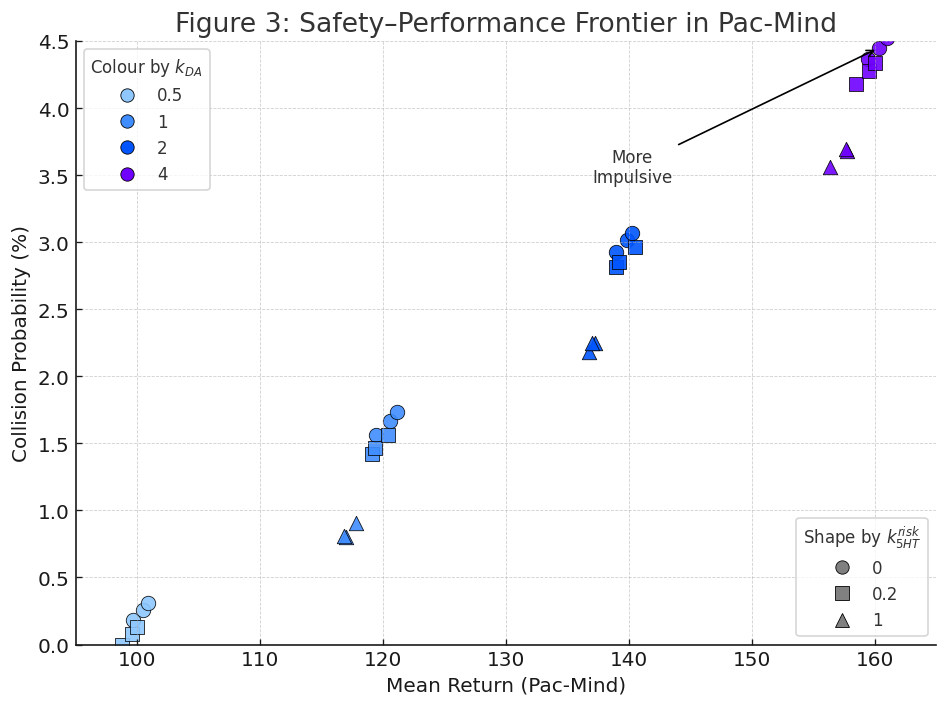

Mood Manifolds: Runtime Control Surfaces for Deep RL
A single mood-conditioned actor-critic exposes reward gain, hazard-cost gain, and action temperature as bounded deployment-time controls. The trained weights stay fixed; changing \(m=(\beta_R,\beta_C,\tau)\) moves the policy along a measured reward-risk surface.
Standard RL deployment usually selects one checkpoint and one reward-risk tradeoff. Mood Manifolds instead condition the actor and critic on a low-dimensional mood vector. The paper's key test is whether a frozen policy can still change behavior when only \(m\) changes. Loss-only mood weights are not enough: runtime control requires the actor's forward pass to read the control vector.
Formulation
The mood vector is deliberately small. \(\beta_R\) scales reward pressure, \(\beta_C\) scales hazard sensitivity, and \(\tau\) controls the deployed action temperature.
Reward gain
Moves the policy toward short routes, fast collection, and high expected return.
Cost gain
Raises the penalty for predicted hazard cost and expands avoidance around risky states.
Action temperature
Sharpens or flattens the actor distribution after scalarization, changing entropy at deployment.
Architecture
MC-PPO uses one actor-critic network. Mood enters the representation through FiLM-style conditioning, the critic keeps reward and cost returns decomposed, and the actor applies the temperature gate to its logits.
1. Condition the policy
A small mood network emits feature-wise scales and shifts for the shared trunk.
2. Keep objectives decomposed
Reward and hazard cost remain separate until the current mood scalarizes them.
3. Calibrate the surface
The deployable object is the measured mapping from mood to behavior, not an arbitrary slider.
Empirical Surface
Sweeping \(m\) over a frozen MC-PPO policy traces a reward-risk frontier. The useful question is not whether one setting is best, but whether nearby settings produce smooth, predictable changes in behavior.

| Method | Pac-Mind HV up | MiniHack HV up | Held-out error down | Policies |
|---|---|---|---|---|
| Neutral PPO | 0.36 +/- 0.03 | 0.31 +/- 0.04 | -- | 1 |
| Loss-only mood modulation | 0.39 +/- 0.04 | 0.34 +/- 0.03 | -- | 1 |
| Temperature-only PPO | 0.51 +/- 0.04 | 0.46 +/- 0.05 | 0.210 +/- 0.032 | 1 |
| Concat-conditioned PPO | 0.72 +/- 0.03 | 0.65 +/- 0.04 | 0.108 +/- 0.019 | 1 |
| FiLM-conditioned PPO | 0.80 +/- 0.02 | 0.74 +/- 0.03 | 0.071 +/- 0.014 | 1 |
| Specialist ensemble | 0.85 +/- 0.02 | 0.79 +/- 0.03 | -- | 64 |
| MC-PPO | 0.90 +/- 0.02 | 0.83 +/- 0.03 | 0.049 +/- 0.010 | 1 |
Implementation Excerpts
The snippets below show the parts that matter for reproducibility: mood-conditioned features, decomposed reward/cost heads, scalarized PPO advantages, and bounded deployment switching.
Actor-critic forward pass
class MoodActorCritic(nn.Module):
def forward(self, obs, mood):
beta_r = mood[..., 0:1]
beta_c = mood[..., 1:2]
tau = mood[..., 2:3]
h = self.encoder(obs)
gamma, eta = self.mood_mlp(mood).chunk(2, dim=-1)
h = self.trunk_norm(h) * (1.0 + 0.1 * gamma) + 0.1 * eta
logits = self.actor(h) / self.temperature(tau)
value_r = self.reward_value(h)
value_c = self.cost_value(h)
value_m = beta_r * value_r - beta_c * value_c
return logits, value_r, value_c, value_mScalarized PPO objective
def scalarized_advantage(adv_r, adv_c, mood):
beta_r = mood[..., 0]
beta_c = mood[..., 1]
return beta_r * adv_r - beta_c * adv_c
adv_m = scalarized_advantage(adv_r, adv_c, mood)
ratio = torch.exp(logp_new - logp_old)
loss_pi = -torch.min(
ratio * adv_m,
torch.clamp(ratio, 1 - eps, 1 + eps) * adv_m,
).mean()Deployment retargeting
mood = torch.tensor([2.0, 0.25, 0.20]) # reward seeking
safe = torch.tensor([1.0, 2.00, 0.45]) # cautious
for obs in stream:
logits, value_r, value_c, value_m = policy(obs, mood)
action = sample_action(logits)
if robust_z_score(value_c, cost_stats) > alarm_threshold:
mood = 0.85 * mood + 0.15 * safeA publishable deployment should report return-cost envelopes, local KL under small mood moves, held-out interpolation error, and the largest safe step size for online switching.